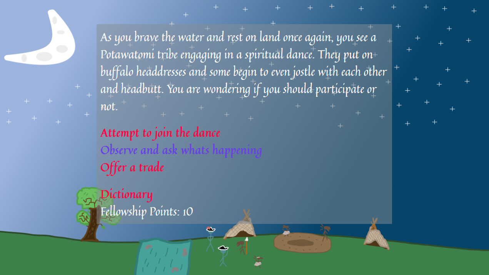
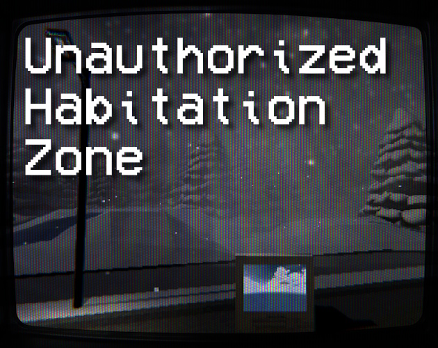
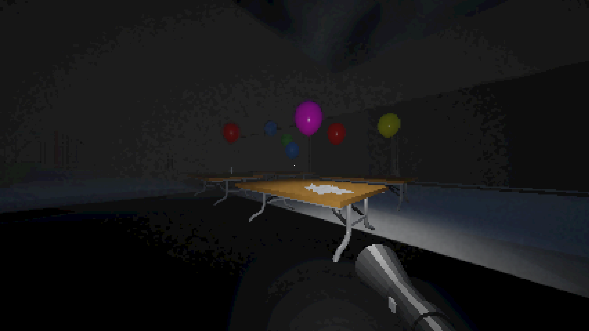

Solar Black | Level Design Lead | March 2022 - June 2023Released: Aug 16, 2023 Platforms: Steam | Quest Store Publisher: Andromeda Entertainment Team Size: 2 Engine and Tools: Unity, Chromapper Responsibilities: Created 5 difficulties for each of the 24 original songs over 2 different gamemodes |
Solar Black is a slashing/shooting rhythm game, comparable to a combination of Beat Saber and Audica.
I was tasked with creating 5 difficulties for each of the 24 original songs covering 3 ingame song "packs". Throughout the process I had
to invent mapping standards, and consistent gameplay that fit 2 gamemodes, sentinel (classic) and discovery (moving player camera
through a dynamic environment). These standards ensured consistent readability, fair challenge and familiar feel between each
difficulty and gamemode. Using hard skills developed from my years of Beat Saber mapping, I was able to effectively implement
the saber slashing gameplay, with a combination of shooting gameplay to make a fun and challenging experience. Difficulties ranged
from Easy, to Legend, with consistent difficulty progression between each song.
Beyond mapping, I worked closely with the lead developer throughout production, contributing to bug fixing, QA, and gameplay
tuning. Many of my suggestions around game feel, balance, and player feedback were incorporated into the final release,
helping shape Solar Black into a more polished and engaging experience.
Voices of the Zibe | Team Lead | August 2025 - December 2025Released: Dec 6, 2025 Platforms: Itch.io Publisher: Cascading Story Games Team Size: 4 Engine and Tools: Twine, Figma Responsibilities: Led a team of 4 to develop an educational story game made in Twine for the Chicago Maritime Museum. |
 |
Voices of the Zibe is an educational story game containing history on ancient Potawatomi tribes, their language, and
historical ways of river transportation along the Chicago Portage. Players act as a European Trader, fresh to the new world and
are tasked with earning "Fellowship Points", a reputation based point system representing the fellowship and trust earned
from interactions with native Potawatomi tribes. Along the way, players have the opportunity to learn Potawatomi vocabulary and
save it in a sustaining dictionary for future reference. 3 different endings are possible based on fellowship points earned.
As the Team Lead I instructed a team of 2 programmers and 1 artist to closely follow the design brief provided by the
Chicago Maritime Museum. Story content was written partially by myself and one other team member. The Twine story structure, style
and art implementation was implemented and setup by myself. Kanban boards and a scrum-based workflow was used for effective
game development. Game prototype was fully made in Figma.
Beat Saber | Mapping Commissions | January 2022 - PresentPlatforms: BeatSaver Publisher: Myself Team Size: 1 Engine and Tools: Chromapper Responsibilities: Providing professionally made Beat Saber maps to request. |

|
For 4+ years, I have been providing custom Beat Saber maps to request via Commissions. Customers contact me through my
posts on Twitter (X), or direct message me through the public Beat Saber Commissions Discord Server. Requests usually include
a song, number of difficulties, requested difficulty and mapping style, and other personalized requests. Customers are
consistently updated with my mapping progress and I always ensure clear communication and timely delivery.
I have completed over 35 commissions in that time with 100% positive customer reviews and experiences.
Unauthorized Habitation Zone | February 2026Released: Feb 21, 2026 Platforms: Itch.io Engine and Tools: Unity, Blender |
 |
Made in about 1 week, Unauthorized Habitation Zone is a short collect-a-thon prototype of a game concept I plan on exploring
further in the future. Unauthorized Habitation Zone puts the player in the perspective of an individial living in a post apocalyptic
world where winter never ends. The player must discover secrets, and remember what happened through lost media to figure out how to live, and
thrive in this ruined world.
Unauthorized Habitation Zone gave me the opportunity to explore environmental storytelling and player driven progression. The game can be completed in any order
and nothing is ever told directly to the player, giving them the opportunity to craft their own theories. I took a dive into technical art with this project aswell,
compiling a number of shaders, visual effects, and post processing to give the game a distinct look and feel.
Playplace: After Hours | Programming Lead | October 2025 - December 2025Released: Dec 13, 2025 Platforms: Itch.io Publisher: Freaky Foods Inc. Team Size: 10 Engine and Tools: Unity, Blender, Github Responsibilities: Led a team of 5 programmers and collaborated cross-team to create Playplace: After Hours from the ground up. |
 |
Playplace: After Hours is a PSX-graphic styled horror puzzle game, inspired by titles such as Five Nights at Freddies, Poppy Playtime, and Superliminal.
A young boy, abandoned by his parents finds himself trapped in an eerie and dark playplace after hours. Discover clues and solve puzzles to discover
the secrets of the Jungle Gym, and escape from a shadowy figure.
Playplace: After Hours was developed by a team of students for our Game Design and Experiential Media final project. I took on the role of programming lead
and implemented a majority of the playable game. I managed a github repo to ensure efficient version control and branching for each developer. Early in the
development I ensured to set up scalable systems for each developer to use for their use, such as an Interactible Interface, UI Manager, Audio Manager,
Event Manager, and Player controller. I had also implemented the entirety of the post processing and stylization of the game.
Rolling Seasons | October 2025 - November 2025Released: Oct 26, 2025 Platforms: Itch.io Engine and Tools: Unity |
Rolling Seasons is an Arcade-style point scoring game inspired by
pinball/peggle. Players control a ball rolling down a scenic hill with a unique set of controls, charging the ball in the given
direction and releasing to apply force. Rolling Seasons is playable in 2 gamemodes. Arcade, which gives the player a maximum
of 5 balls to score as many points as possible, and Speedrun, which gives the player an infinite amount of balls to deactivate
all pegs as quickly as possible.
Rolling Seasons was originally developed in 24 hours for the Fall 2025 Internation Game Development Association Game Jam
on Illinois Institute of Technology Campus. The given prompt was "Leaf", which I decided to include in the style of the game
simulating a number of seasons and colorful tree types that the player can observe while going down the hill; giving the game
its name, "Rolling Seasons". Beyond the game jam I wanted to take this game further where I created the speedrun gamemode,
polished the controls, added additional level design and included and OST created by my close friend Schwank
Rolling Seasons represents the type of game I'm most passionate about and that I enjoy most, arcade games! I
love the thrill of improving my best score by developing strategies and practicing difficult to execute tricks. I have a strong
vision for what Rolling Seasons could be and I plan to revisit the project in the future to realize what this game can become.
For the greater part of the past 6 years I have been a major contributer to BeatSaber custom level creation, curation, ranking, and modding. In that time I've published over 350 custom maps, over 35 professionally made commissioned maps, won Mapper Of The Year in 2024, and been a prominent Ranking and Quality Assurance Team member for Scoresaber, the largest custom levels leaderboard for Beat Saber. I've also participated in a number of community driven mapping events, one of which being Diamonds in the Rough. New mappers known as "diamonds" are paired alongside teachers like myself to create a custom level mapset using our advice and experience to help guide them.
MappingBeat Saver Profile (website for hosting all custom levels) Throughout my 6 years of level creation I have released over 350 custom maps with more than 43000 total likes. My main objective with mapping is always to create a unique experience for each song and I have kept that vision consistent for each map I've released. I always strive for innovation, creativity and fun. Over the years I've won a number of mapping awards in a community driven award show known as the "Beasties". Some noteable acheivements were one of my maps winning 3 catagories including "Map of the Year" in 2021, 2 awards in 2023, and 3 awards including myself winning "Mapper of the Year" in 2024. |
LightingAnother major portion of creating Beat Saber maps, is creating custom lightshows. Lightshows accompany the gameplay by acting as stage lights or a changing environment in the background. Lights are a much more technical process than making maps, requiring high understanding of animation, color, comfort, and transitions. I have created close to 20 full lightshows using Beat Saber's "V3" lighting pipeline, which is the most advanced and has the most freedom. Shown in the embed is one I created for a song known as "Aim Higher" on the "The Rolling Stones" environment. Find more here: |
ScoreSaberScoreSaber is a BeatSaber mod that adds custom level leaderboard support. Custom leaderboards are supported for every map uploaded but only a select few get "ranked". Ranked maps are the backbone of ScoreSaber and support the entire competative BeatSaber community. Once a map is ranked, players are able to earn Performance Points from setting scores, which accumulate on a players profile, giving them a global rank. The ranking process however, is not straightforward, which is where my roles come in. Throughout 2021-2026 I was part of both Ranking and Quality Assurance Teams for the leaderboard. Throughout the 5 years I completed over 500 checks of different ranked maps. As a Ranking Team member, I was responsible for checking maps to make sure they meet objective rankability guidelines, such as notes being on time, lacking "hand clap" or "arm tangle" patterns that put the player at risk, and having a reasonable difficulty spread. As a Quality Assurance Team member, I worked 1 on 1 with mappers a lot closer. Some of my responsibilities involved checking the quality of musical representation, difficulty progression, pattern optimization, swing comfort, and many other small compontent needed to make a map that meets ranking standards and Quality. |